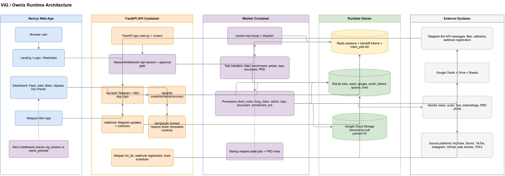

Architecture review · page-1 runtime map
VIG runtime architecture review
Based on docs/diagrams/vig-architecture-pages/page-1.png and the modules behind the runtime path.
This review looks for deepening opportunities: places where a module can put more behaviour behind a smaller
interface, improving locality, leverage, and testability.
Module
Anything with an interface and implementation.
Depth
More behaviour per unit of interface learned.
Locality
Change and bugs concentrate in one place.
Deletion Test
If deleted, does complexity scatter?
Constraints respected: SQLite and Redis list queue are accepted architecture decisions; Redis session auth is accepted;
the Shared job-creation core is already a good deep module and should be preserved; ADR-0036 is accepted and
should shape Telegram/Ops recommendations even before the implementation lands.
Pending architecture input: ADR-0036 splits Telegram into a user-facing Ownix bot and an internal Ops bot.
Treat invite approvals, Ops commands, allowlists, and /webhook/ops as the target shape, while noting
that the code has not landed yet.
Page 1 Reference
The runtime diagram shows the main pressure points: Next.js, FastAPI, Telegram webhook, worker, Redis, SQLite,
GCS, Gemini, Google, and Telegram all touch the same flows.

1. Split and Deepen the Telegram Interaction Modules
Strong
Files: src/telegram/webhook.py, src/telegram/sender.py,
future /webhook/ops route, future Ops bot module, src/services/jobs.py,
src/database.py
Problem
The Telegram module has useful dispatch tables, but the interface still forces one place to understand update
parsing, invite access, slash shortcuts, chat state, callbacks, photo/document paths, job creation, and
user-facing delivery. ADR-0036 adds a second pressure: internal operations must move to a separate Ops bot,
so a single mixed Telegram module would now hide two different authorities behind one interface.
Solution
Deepen Telegram as two modules, not one: a user-facing Ownix bot module for login, submission, job status,
and result delivery, plus an Ops bot module for approval cards, pending-user inspection, allowlists, and
internal commands. Keep ADR-0033's Shared job-creation core intact; this is about placing conversation and
authority rules behind smaller interfaces, not moving job logic back into Telegram.
Benefits
Better locality for user-facing conversation rules and Ops-only authority rules. Tests can exercise Telegram
behaviour through smaller interfaces instead of assembling raw Telegram update dictionaries plus database/queue
side effects for every case. ADR-0036 also gives the deletion test sharper teeth: deleting the Ops module should
not scatter approval cards, allowlist checks, command parsing, and CSV thresholds into the user bot.
Before
flowchart TB
W[webhook.py] --> U[update parsing]
W --> I[invite approvals]
W --> S[slash table]
W --> C[chat_state]
W --> K[callback table]
W --> J[create job]
W --> T[user replies]
W --> O[ops cards]
W --> P[photo/document paths]
After
flowchart TB
UserBot[Ownix bot module] --> Conv[user conversation + callbacks]
UserBot --> Ingest[ingest requests]
UserBot --> Reply[user delivery]
OpsBot[Ops bot module] --> Pending[pending-user inspection]
OpsBot --> Approve[approval/block decisions]
OpsBot --> Commands[Ops read commands]
Ingest --> Core[Shared job-creation core]
Conv --> PRD[PRD/chat-state flows]
Approve --> Status[user status]
Reply --> Sender[Ownix sender adapter]
OpsBot --> OpsSender[Ops sender adapter]
ADR note: Compatible with ADR-0033 and now constrained by ADR-0036. Do not re-import shared job creation
into either bot module. Also do not route Ops approval traffic through the user-facing Ownix bot; the target shape
is separate credentials, separate webhook path, and separate read/mutate allowlists.
2. Create One Access-Decision Module
Strong
Files: web/middleware.ts, web/app/(dashboard)/layout.tsx,
src/auth/middleware.py, src/api/auth.py, src/telegram/webhook.py,
src/database.py
Problem
Access rules are split across frontend navigation, backend session resolution, route allowlists,
pre-approval exceptions, invite status, preview mode, Telegram invite callbacks, and Mini App handoff.
The interface is bigger than it looks because callers must know path classes, cookie meanings, approval
exceptions, and preview precedence.
Solution
Deepen a single access-decision module around an AccessDecision interface. Keep ADR-0031's two
enforcement points, but move route classification and approval outcomes behind one backend seam; keep Next
middleware as a navigation adapter.
Benefits
More leverage per rule change, better locality for invite/preview/auth behaviour, and a clearer test surface:
deleting this module would force the access matrix back into multiple callers.
Before
flowchart LR
N[Next middleware] --> C[cookie/preview]
A[API middleware] --> R[Redis session]
A --> DB[user status]
T[Telegram webhook] --> I[invite gate]
G[Google connect] --> H[handoff token]
Auth[/api/auth] --> Email[email + notify]
After
flowchart LR
N[Next middleware] --> D[Access decision module]
A[API middleware] --> D
T[Telegram webhook] --> D
G[Google connect] --> D
Auth[/api/auth] --> D
D --> R[session adapter]
D --> U[user/invite adapter]
ADR note: No conflict if /api/* remains FastAPI-enforced per ADR-0016/0031.
Moving true enforcement into Next would conflict.
3. Extract Session Cookie Issuance
Strong
Files: src/api/auth.py, src/auth/session.py
Problem
Session minting is deep, but cookie issuance is shallow and duplicated. Route code knows max age,
httponly, secure, samesite, preview-cookie cleanup, logout shape,
and Mini App special casing.
Solution
Add a small session-cookie issuer module that owns cookie policy and calls session.mint /
session.revoke internally. The login routes should say which surface they are on, not restate
cookie mechanics.
Benefits
Higher depth at the login seam, fewer security facts in route code, and better locality when cookie policy
changes. This is small, surgical, and likely to pay back quickly.
Before
flowchart TB
TelegramLogin[/telegram login/] --> Mint[session.mint]
MiniLogin[/miniapp session/] --> Mint
TelegramLogin --> CookieA[set Lax cookie + delete preview]
MiniLogin --> CookieB[set None cookie]
Logout[/logout/] --> Revoke[session.revoke + delete cookie]
After
flowchart TB
Routes[auth routes] --> Issuer[Session cookie issuer]
Issuer --> Store[session store adapter]
Issuer --> Policy[web vs mini cookie policy]
Issuer --> Preview[preview cleanup]
Issuer --> Logout[clear session]
ADR note: Preserves ADR-0016 Redis opaque sessions; Mini App SameSite=None remains an explicit adapter case.
4. Deepen the Opt-In Export Workspace Module
Worth exploring
Files: src/config.py, src/services/google_tokens.py,
src/services/google_workspace.py, src/services/drive.py,
src/services/sheets.py, src/api/google_oauth.py
Problem
The Google connection is a domain concept, but its behaviour is spread through settings, token encryption,
sync SQLite reads, workspace creation, export gating, Drive uploads, Sheets rows, OAuth endpoints, and
disconnect lifecycle.
Solution
Create a deeper opt-in export workspace module that owns "can this Tenant export?" and "where should this
artifact go?" Drive and Sheets become adapters behind that module rather than places where the policy is
rediscovered.
Benefits
Locality improves around credential revocation, operator fallback, per-user folders, and export blocking.
Tests can cover export policy once with fake adapters. Processors gain leverage because they stop carrying
Google connection policy in every upload/append call.
Before
flowchart TB
P[processors] --> D[drive.py]
P --> S[sheets.py]
D --> E[settings.export_blocked]
S --> E
D --> W[google_workspace]
S --> W
W --> T[google_tokens]
OAuth[/api/google] --> T
After
flowchart TB
P[processors] --> X[Opt-in export workspace module]
X --> Policy[export policy]
X --> Target[target folder/sheet]
X --> Drive[Drive adapter]
X --> Sheets[Sheets adapter]
X --> Tokens[token adapter]
OAuth[/api/google] --> X
ADR note: Compatible with ADR-0030; this would deepen the chosen credential model rather than change it.
5. Deepen the Job Submission Module
Strong
Files: src/services/jobs.py, src/telegram/webhook.py,
src/api/jobs.py, src/services/repo_followup.py, src/queue.py,
src/worker.py
Problem
create_and_enqueue_job is already valuable, but the Job submission concept still leaks.
Callers still know task strings, cache policy, explicit-template side effects, and when to bypass the helper.
The duplicated task mapping smell is the giveaway: webhook.py has its own mapping shape while
src/services/jobs.py has task_for_content_type.
Solution
Deepen src/services/jobs.py into the Job submission module with a small interface such as
submit_job(intent) -> SubmissionResult. Keep Telegram copy and HTTP responses outside it, but
move content-type-to-task mapping, dedup, create, status initialization, and enqueue into one implementation.
Benefits
Higher leverage across Telegram, dashboard, and repo follow-up callers. Better locality for new content types.
The deletion test is strong: deleting this module would re-spread dedup/create/enqueue rules across callers.
Before
flowchart TB
TG[Telegram caller] --> Helper[create_and_enqueue_job]
API[Dashboard caller] --> Helper
Repo[Repo follow-up] --> Helper
TG --> MapA[local task mapping]
Helper --> MapB[task_for_content_type]
Helper --> DB[create job]
Helper --> Q[enqueue raw task]
After
flowchart TB
TG[Telegram caller] --> Submit[Job submission module]
API[Dashboard caller] --> Submit
Repo[Repo follow-up] --> Submit
Submit --> Policy[dedup + template policy]
Submit --> DB[create/init job]
Submit --> Task[task mapping]
Submit --> Q[queue adapter]
Submit --> Result[SubmissionResult]
ADR note: Aligns with ADR-0033 if caller-owned notification stays intact. It would conflict only if the
module started sending Telegram messages.
6. Make Task Envelopes a Real Module
Worth exploring
Files: src/queue.py, src/worker.py, src/services/jobs.py,
src/api/jobs.py, src/telegram/webhook.py, processor entrypoints
Problem
The queue adapter is intentionally simple, but the task envelope is currently a raw dict convention shared
by producers and the worker. The interface is shallow: every producer and handler must remember discriminator
strings, optional flags, content-type-to-task mapping, and which task expects which persisted job state.
Solution
Deepen the task envelope module while keeping Redis list transport. The module owns task construction,
validation, serialization, and dispatch metadata. Redis remains the adapter; worker and producers stop
speaking ad hoc dict.
Benefits
More leverage for every new task type and retry path. Better locality for queue protocol changes. Tests can
verify task construction and dispatch without a live Redis adapter or brittle raw dict assertions.
Before
flowchart LR
API[api/jobs] --> Q[queue.enqueue dict]
TG[webhook] --> Q
Core[services/jobs] --> Q
Q --> W[worker dispatch raw task]
W --> P[processors]
After
flowchart LR
API[api/jobs] --> T[Task envelope module]
TG[webhook] --> T
Core[services/jobs] --> T
T --> Q[Redis list adapter]
Q --> W[worker]
W --> T
T --> P[processor dispatch]
ADR note: Compatible with ADR-0002. The proposal is not "replace Redis"; it is to hide the queue protocol
behind a deeper module.
7. Add a Job Output Module
Worth exploring
Files: src/processors/*.py, src/services/drive.py,
src/services/sheets.py, src/telegram/sender.py, src/brain.py,
src/services/storage.py
Problem
Processors mix core processing with durable-output concerns: Drive, Sheets, storage, sheets_row_id,
background spawning, export-gate behaviour, append-vs-update rules, and delivery metadata. Drive, Sheets,
and storage are adapters, but there is no higher-depth module at the seam where a processed artifact becomes
durable Job outputs.
Solution
Create a small Job output module with interfaces like publish_article_outputs,
publish_document_outputs, and publish_repo_outputs. Start with Sheets row
append/update plus sheets_row_id; do not abstract every external write at once. Let Drive,
Sheets, Telegram, Brain, and GCS remain adapters behind the seam.
Benefits
Improves locality for export/idempotency behaviour and makes ADR-0010 easier to preserve, because duplicate
output writes become visible at one seam. Processor tests can assert artifacts; Job output tests can assert
append/update and fan-out behaviour. The deletion test is strong for Sheets/output idempotency and weaker for
a broad "publish everything" abstraction, so keep the first pass narrow.
Before
flowchart TB
Short[short_video] --> D[Drive]
Short --> S[Sheets]
Short --> TG[Telegram]
Short --> B[Brain]
Repo[repo] --> S
Repo --> TG
Doc[document] --> GCS[GCS]
Doc --> S
PRD[prd] --> D
PRD --> S
PRD --> TG
After
flowchart TB
Proc[processors produce artifacts] --> Pub[Publication module]
Pub --> D[Drive adapter]
Pub --> S[Sheets adapter]
Pub --> TG[Telegram adapter]
Pub --> B[Brain ingest]
Pub --> GCS[GCS adapter]
ADR note: Compatible with existing Drive/Sheets/storage adapters. Must preserve ADR-0010 by making
duplicate output writes explicit rather than silently re-touching old rows/files.
8. Normalize Worker Dispatch
Speculative
Files: src/worker.py, src/processors/enrichment.py,
src/processors/long_video.py, src/processors/document.py, processor entrypoints
Problem
worker.py has a clean dispatch table, but each handler repeats a load/try/log/status/failure
notification shape. Processor interfaces vary: some take job, some take job_id,
and some take task flags.
Solution
Introduce a worker dispatch module with a narrow interface: task name to processor adapter. Each adapter
owns load shape, failure status, user message, and any follow-up enqueue. Keep reap_stale_jobs()
startup-only and do not turn this into a retry/backoff system.
Benefits
More depth in the worker seam and better locality for future task types. The deletion test is moderate:
today most complexity reappears in one file, not many files, so this is less urgent than Job submission or
Job outputs.
Before
flowchart TB
Worker[worker.loop] --> Table[_TASK_HANDLERS]
Table --> H1[_handle_video]
Table --> H2[_handle_article]
Table --> H3[_handle_document]
H1 --> Load[load job]
H2 --> Load
H3 --> Load
H1 --> Notify[failure notify]
H2 --> Notify
H3 --> Notify
After
flowchart TB
Worker[worker.loop] --> Dispatch[Worker dispatch module]
Dispatch --> A1[video adapter]
Dispatch --> A2[article adapter]
Dispatch --> A3[document adapter]
A1 --> Proc[processor entrypoints]
A2 --> Proc
A3 --> Proc
Dispatch --> Failure[standard failure policy]
ADR note: Compatible only if it preserves ADR-0002 and ADR-0010. Do not use this as a path to automatic
retries, backoff, streams, or dead letters.
Top Recommendation
Start with Deepen the Job submission module. It is narrower than the Telegram interaction module, directly
reinforces ADR-0033, and gives quick leverage across Telegram, dashboard submission, repo follow-up, reprocess,
and force-new paths without changing Redis or caller-owned notifications.
Second choice: Split and deepen the Telegram interaction modules, especially as ADR-0036 lands. Third choice:
Create one access-decision module, especially if invite/preview/approval rules keep changing across the
dashboard, Ownix bot, and Ops bot.